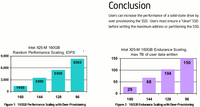

Begriffsdefinitionen
Zum Verständnis dieses Artikels sind folgende Seiten hilfreich:
Hinweis:
Dieser Artikel ist Teil der Artikelserie SSD, welche das Thema Solid State Drives behandelt.
 Die folgenden alphabetisch sortierten Begriffe fallen immer wieder in Bezug auf SSD und sollen daher in aller gebotenen Kürze angesprochen werden. Weitergehende Informationen sind jedoch verlinkt.
Die folgenden alphabetisch sortierten Begriffe fallen immer wieder in Bezug auf SSD und sollen daher in aller gebotenen Kürze angesprochen werden. Weitergehende Informationen sind jedoch verlinkt.
Auslagerungsspeicher¶
Zur Bewertung der Eignung von Flashlaufwerken für die Aufnahme des Auslagerungsspeichers (oder Auslagerungsdatei) eines Betriebssystems eignet sich am besten eine Analyse der Zugriffe auf diesen Speicher. Microsoft hat eine solche Analyse  während der Arbeit an Windows 7 durchgeführt: Die Auswertung ergab ein Zugriffsmuster aus kurzem, verteiltem Lesen und längerem, zusammenhängendem Schreiben. Das entspricht den Stärken von Flashspeichern. Lesezugriffe überstiegen Schreibvorgänge um das Vierzigfache, während zu je zwei Dritteln erstere bis 4 KB Größe hatten und zweitere ab 128 KB Länge besaßen. Laut Microsoft gibt es daher kaum geeignetere Anwendungen für Flashlaufwerke als den Auslagerungsspeicher. Dennoch besitzen nicht alle MLC-basierenden Produkte eine hinreichende Geschwindigkeit, so dass ein Studium der konkreten Leistungsfähigkeit sinnvoll ist (siehe SSD).
während der Arbeit an Windows 7 durchgeführt: Die Auswertung ergab ein Zugriffsmuster aus kurzem, verteiltem Lesen und längerem, zusammenhängendem Schreiben. Das entspricht den Stärken von Flashspeichern. Lesezugriffe überstiegen Schreibvorgänge um das Vierzigfache, während zu je zwei Dritteln erstere bis 4 KB Größe hatten und zweitere ab 128 KB Länge besaßen. Laut Microsoft gibt es daher kaum geeignetere Anwendungen für Flashlaufwerke als den Auslagerungsspeicher. Dennoch besitzen nicht alle MLC-basierenden Produkte eine hinreichende Geschwindigkeit, so dass ein Studium der konkreten Leistungsfähigkeit sinnvoll ist (siehe SSD).
Hauptartikel: SSD/Auslagerung
Defragmentierung¶
Eine Defragmentierung ist aufgrund der marginalen Lesezugriffszeiten nicht nötig. In Bezug auf die Schreibleistung differieren die Herstellerangaben jedoch. So warnt OCZ die Nutzer seiner MLC-basierten Core-Serie vor dem Defragmentieren mit dem Verweis, dass sich dadurch die Lebensdauer reduzieren kann, während MTron für seine SLC-basierten Produkte ein Defragmentieren sogar empfiehlt. Kingston hingegen rät stets vom Defragmentieren ab – ganz gleich, ob für das SLC- oder MLC-Format (siehe auch SSD).
Garbage Collection¶
Viele Hersteller von SSD implementieren im Hardware-Controller der SSD eine sogenannte Garbage Collection. Zu Zeitpunkten ohne jegliche I/O-Zugriffe werden teilweise beschriebene Blöcke vom Controller in volle Blöcke zusammen gefasst. Freigewordene Blöcke werden dann anschließend gelöscht.
Löschen von Dateien¶
Für den Heimgebrauch gibt es keine vollständige und sichere Löschmöglichkeit (im Sinne der Datensicherheit). Das liegt am nicht ansprechbaren Reservespeicher (siehe Abschnitt „Spare Area“) der SSD, welcher nur dem Controller zugänglich ist. Jener Bereich dient sowohl als Ruheplatz der abgenutztesten Sektoren, als auch der Geschwindigkeitssteigerung (siehe SSD).
→ Hauptartikel: SSD/Secure-Erase
MLC versus SLC¶
| Vergleich | |
| MLC-Speicherzellen | SLC-Speicherzellen |
| Überblick | |
| MLC (engl. multi-level cell) | SLC (engl. single-level cell) |
| Speicherzellen in denen mehr als ein Bit pro Zelle gespeichert wird. Dies wird durch Speichern von mehr als zwei Zuständen (engl. levels) in der Zelle erreicht. | Speicherzellen, die ebenfalls aus NAND-Flash bestehen und jeweils ein Bit speichern. Es wird hierbei nur ein Spannungslevel pro Transistor verwendet. |
| Einsatzschwerpunkt: Consumer-Bereich | Einsatzschwerpunkt: Server-/Business-Bereich |
| Vorteile / Nachteile | |
| langsamer als SLC | schneller als MLC |
| billiger als SLC | teurer als MLC |
Das Abspeichern von mehreren Bits pro Speicherzelle (MLC) hat zum Nachteil, dass die Lese- und Schreibgeschwindigkeit reduziert wird und sich bei einem Ausfall der Zelle die Bitfehlerrate (engl. bit error rate, BER) erhöht.
Spare Area¶
 Ähnlich wie konventionelle Festplatten bringen auch Flashfestplatten bei nur geringer Restkapazität nicht mehr die volle Leistung. Bei beiden Laufwerkstypen spielt dabei die Suche nach den nur wenigen freien Speicherbereichen die Hauptrolle. Der Effekt der „Write Amplification“ verstärkt das noch auf Seiten der Flashfestplatten. Daher zweigen deren Hersteller etwa zehn Prozent des Laufwerks für eine „Spare Area“ als Leistungs- und Verschleißreserve ab. Diese Spare Area nutzt die SSD für „Read-Modify-Write“, „Wear Leveling“ und „Bad Block Replacement“. (siehe SSD)
Wie Intel in einem Whitepaper „Over-provisioning an Intel SSD“ schreibt (PDF), erhöht eine größere „Spare Area“ die Performance und die Lebensdauer einer SSD dadurch, dass mehr Blöcke ungenutzt bleiben und somit ebenfalls für „Read-Modify-Write“, „Wear Leveling“ und „Bad Block Replacement“ genutzt werden können
Vergrößern der Spare Area¶
Möchte man die „Spare Area“ manuell erhöhen, gibt es grundsätzlich drei Möglichkeiten dazu:
Freihalten eines unpartitionierten Bereiches, indem man bei einer 160 GB SDD beispielsweise nur eine primäre Partition mit 144 Gigabyte nutzt und den Rest frei lässt
Freihalten eines ungenutzten Bereiches beim Betrieb der SSD an einem RAID-Controller
per ATA-Kommando
ATA8-ACS SET MAX ADDRESS(„Host Protected Area feature set“). HPA ist bei SSD von Haus aus nicht aktiviert. Dazu nutzt man den Befehl hdparm. Der entsprechende Wert muss im Dezimalsystem direkt hinter die Option-Neingetragen werden. An dieser Stelle sei auf die hdparm Man-Pages (maverick) (Option: -N) verwiesen.
Weitere Informationen zum Thema „Spare Area” findet man hier  .
.
Over-Provisioning/HPA¶
Ein sogenanntes Over-Provisioning (nicht die komplette Kapazität der SSD nutzen) erreicht man
wenn man bei der Partitionierung der SSD hinter der letzten Partition unbenutzten Speicherplatz frei lässt
noch vor der Partitionierung die Kapazität der SSD durch die Einrichtung eines für das Betriebssystem nicht erreichbaren Bereichs einschränkt.
Diesen Host Protected Area (HPA) genannten Bereich kann man mit hdparm einrichten (siehe Thomas Krenn Wiki ). Damit diese Methoden wirken, muss der freie Bereich leer sein, was sich durch ein Secure Erase bewerkstelligen lässt.
TRIM¶
TRIM ist ein sehr wichtiger Befehl zur Markierung ungenutzter oder ungültiger Datenblöcke auf Speichermedien zum Zweck der späteren Wiederbeschreibung. Durch den TRIM-Befehl wird dem Laufwerk beim Löschen von Dateien mitgeteilt, dass es die davon betroffenen Blöcke als ungültig markieren kann, anstelle deren Daten weiter vorzuhalten. Die Inhalte werden nicht mehr weiter mitgeschrieben, wodurch die Schreibzugriffe auf das Laufwerk beschleunigt und zudem die Abnutzungseffekte verringert werden. (siehe TRIM)
→ Hauptartikel SSD/TRIM
Wear Levelling¶
Hinweis:
Die kurze Lebensdauer, die SSD nachgesagt wird, ist bei heutigen Flash-Speichern wirklich nur noch ein Mythos. Dieser hält sich jedoch leider nach wie vor in vielen Forenbeiträgen und Webseiten. Fakt ist, dass eine SSD bei normalem Gebrauch mindestens genauso lange hält wie eine konventionelle Festplatte (HDD). Zweifler können sich im Abschnitt Haltbarkeit der SSD überzeugen lassen.
Flashfestplatten (SSD) verschleißen mit der Zeit. Lesevorgänge sind hier zwar unbegrenzt möglich, die Schreibvorgänge sind jedoch endlich (10.000 bis 100.000). Danach „vergisst“ das Flashlaufwerk, was neu geschrieben wird und kann nur noch gelesen werden. Flashspeicher wären so mitunter schon nach wenigen Tagen defekt. Dem wirken seit einigen Jahren „Wear-Levelling“-Verfahren entgegen. Der Controller im Flashlaufwerk verteilt Schreibvorgänge auf alle Speicherzellen so, dass jede möglichst gleich häufig beschrieben wird. Die dafür verwendeten Algorithmen sind vom Rest des Computers aus weder sicht- noch beeinflussbar (siehe SSD).
Duraclass¶
Zusätzlich zum Wear Levelling benutzen Sandforce Controller (z.B. OCZ Vertex 2/3) die sogenannte „Duraclass-Technik“, welche es dem Controller ermöglicht, bei vielen Schreibvorgängen in kurzer Zeit, die Schreibgeschwindigkeit zu drosseln. Wie lange er in diesem Modus bleibt, hängt von der Art (komprimierbare/unkomprimierbare) der Daten ab und der Menge. Eine genaue Definition gibt es aber nicht. Jedenfalls sollte man Benchmarks von SSD mit Sandforce Controllern nicht zu viel Aussagekraft zuteil werden lassen, da gerade nach der Installation eines Betriebssystems unter Umständen schon Duraclass greift (siehe auch Understanding SF1200 drives, TRIM, OP area use and Life write throttle ).
- Erstellt mit Inyoka
-
 2004 – 2017 ubuntuusers.de • Einige Rechte vorbehalten
2004 – 2017 ubuntuusers.de • Einige Rechte vorbehalten
Lizenz • Kontakt • Datenschutz • Impressum • Serverstatus -
Serverhousing gespendet von